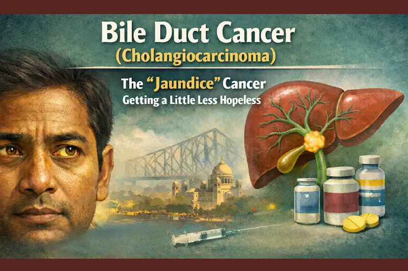
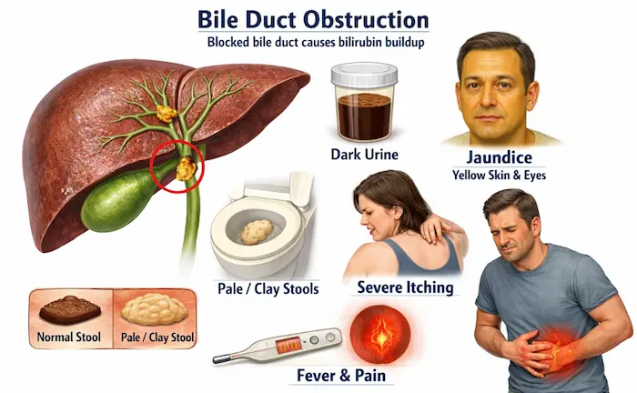
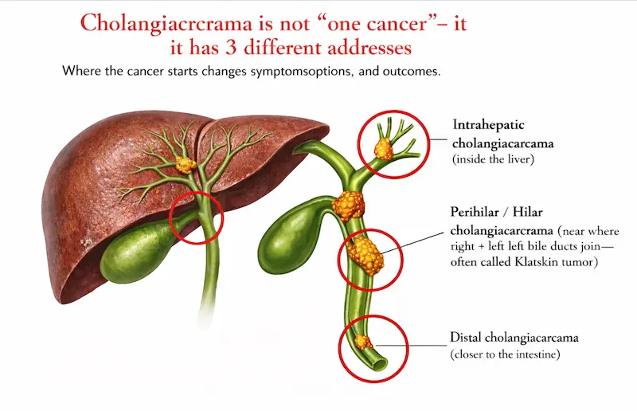
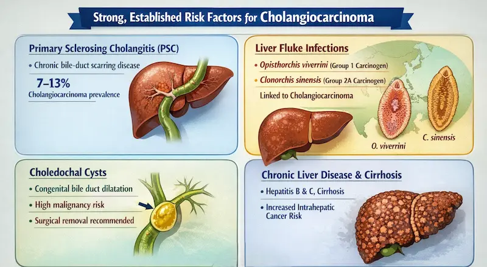
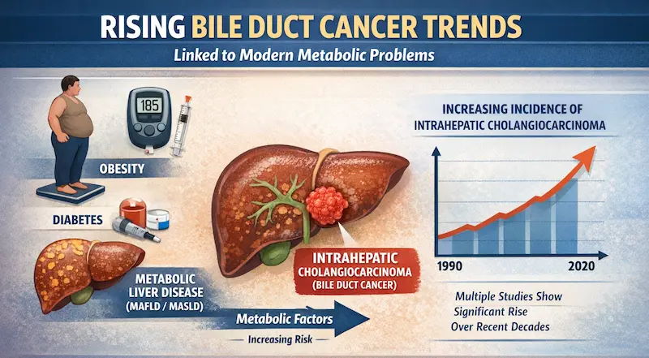
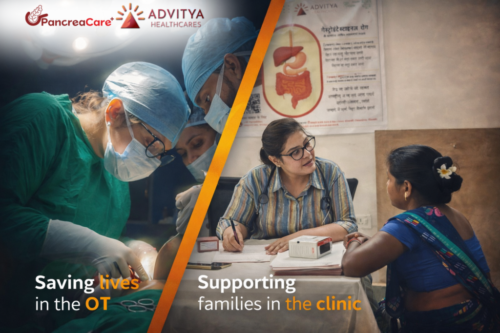

The “jaundice” cancer that’s getting a little less hopeless—because the world is finally treating it smarter
The “jaundice” cancer that’s getting a little less hopeless—because the world is finally treating it smarter
In Kolkata, “হলুদ চোখ” (yellow eyes) is often dismissed as “liver weakness,” a food problem, or a few days of medicines. But in some people, jaundice is the body’s loudest alarm that bile is not flowing—and when bile flow is blocked, one of the most serious causes doctors must rule out is bile duct cancer (cholangiocarcinoma).
This blog will help you understand what cholangiocarcinoma is, why it’s often missed, how diagnosis actually happens, and—most importantly—what’s genuinely new and true in the world right now: bile duct cancer care is changing fast because immunotherapy + chemo is now an approved first-line option, and targeted treatments are expanding, including a newer HER2-directed drug for a specific subgroup.
First: what are bile ducts, and why does “blockage” matter?

Bile ducts are the plumbing system that carries bile from the liver to the intestine. Bile helps digest fats. If a bile duct gets blocked, bilirubin builds up—leading to:
- Jaundice (yellow skin/eyes)
- Dark urine
- Pale/clay stools
- Intense itching (a surprisingly important clue)
- Sometimes fever and pain (if infection happens)
These are classic warning signs listed by major cancer/medical references.
Cholangiocarcinoma is not “one cancer”—it has 3 different addresses

Where the cancer starts changes symptoms, surgery options, and outcomes.
- Intrahepatic cholangiocarcinoma (inside the liver)
- Perihilar / Hilar cholangiocarcinoma (near where right + left bile ducts join—often called Klatskin tumor)
- Distal cholangiocarcinoma (closer to the intestine)
This isn’t trivia—this classification is standard in major references.
Why bile duct cancer is often missed (especially early)
Here’s the uncomfortable truth: early bile duct cancer can look like common Kolkata problems—acidity, gallstones, hepatitis, “gas,” fatigue, poor appetite.
But bile duct cancer becomes easier to suspect when symptoms look like obstruction:
The obstruction pattern (high suspicion)
- Jaundice that is progressive (worsens over days/weeks)
- Itching + pale stool + dark urine together
- Unexplained weight loss
- New fever with chills (possible bile duct infection on top of blockage)
These symptoms are repeatedly emphasized in cancer resources.
“What causes it?” — risk factors that are real (not WhatsApp myths)
Most people with cholangiocarcinoma don’t have a single obvious cause. But doctors take risk factors seriously because they raise suspicion and change screening/diagnosis urgency.
Strong, established risk factors
- Primary sclerosing cholangitis (PSC): a chronic bile-duct scarring disease; cholangiocarcinoma prevalence in PSC is reported around 7–13% in classic reviews.
- Liver fluke infections (more relevant in parts of Asia): IARC has classified Opisthorchis viverrini infection as carcinogenic to humans (Group 1) and Clonorchis sinensis as probably carcinogenic (Group 2A)—linked strongly to cholangiocarcinoma.
- Choledochal cysts (congenital bile duct dilatation): associated with increased malignancy risk; surgical removal is recommended once diagnosed due to malignant transformation risk.
- Chronic liver disease / viral hepatitis / cirrhosis can raise risk, especially for intrahepatic cases.

Emerging global risk signals (the “new world” angle)
Research continues to connect rising bile duct cancer trends with modern metabolic problems like obesity, diabetes, and metabolic liver disease (MAFLD/MASLD).
And yes—multiple large datasets show incidence of intrahepatic cholangiocarcinoma has increased over recent decades.

Kolkata-friendly diagnostic roadmap: how doctors actually confirm
(step-by-step)
If jaundice or obstruction signs appear, the goal is to answer 3 questions fast:
- Is there obstruction?
- Where is the blockage?
- Is it cancer or something benign (like stones)?
Step A: Basic labs
- Liver function tests (bilirubin, ALP/GGT, etc.)
- CBC, infection markers if fever
These don’t “diagnose cancer,” but they guide urgency.
Step B: Imaging that shows the plumbing + the cause
- Ultrasound is often the first scan (fast, widely available).
- CT/MRI/MRCP helps map the bile ducts, mass, and spread.
Step C: Tissue confirmation (biopsy/cytology) — the tricky part
Getting a definite diagnosis can be challenging because bile duct cancers can be hard to sample. During ERCP, doctors may use brush cytology or forceps biopsy—but sensitivity can be limited, which is why results may be “inconclusive” even when suspicion is high.
What this means for patients:
If symptoms + imaging strongly suggest malignancy, a single “negative brush test” may not end the story. Doctors may escalate to better sampling approaches or repeat evaluation.
Treatment: what’s possible today (and what has genuinely changed recently)

Treatment depends on stage and location.
A) If the tumor is resectable (localized)
Surgery offers the best chance of cure (often complex HPB surgery).
After surgery, adjuvant chemotherapy is commonly considered. A landmark trial (BILCAP) supported capecitabine as adjuvant therapy in resected biliary tract cancers, though interpretation involves nuances across analyses.
B) Special case: selected perihilar cases and liver transplant pathways
For a carefully selected subset of early-stage, unresectable perihilar tumors, neoadjuvant therapy followed by liver transplantation has shown long-term survival in specialized programs.
C) If the cancer is advanced/unresectable (the “world is changing” zone)
This is where the biggest real-world shift has happened.
1) Chemo backbone: Gemcitabine + Cisplatin
This combination became a standard first-line regimen after pivotal trial evidence.
2) The big recent change: Immunotherapy + chemo is now FDA-approved first-line
Two separate immune checkpoint strategies have gained FDA approval for locally advanced unresectable or metastatic biliary tract cancer:
- Durvalumab + gemcitabine/cisplatin (approved 2022)
- Pembrolizumab + gemcitabine/cisplatin (approved 2023)
And updated follow-ups from the TOPAZ-1 program report that the survival benefit remains sustained with longer tracking, including a notable 3-year survival signal compared with chemo alone.
3) The precision era: “test the tumor, don’t guess”
Modern guidelines emphasize that biliary tract cancers are genetically diverse, and molecular profiling is strongly recommended to identify actionable targets (FGFR2, IDH1, HER2, BRAF, MSI-H, NTRK, etc.).
Targeted therapy is expanding (and one newer approval matters)
If your tumor carries specific markers, treatment can shift from “one-size chemo” to targeted drugs.
FGFR2 fusions/rearrangements (subset of intrahepatic cholangiocarcinoma)
- Pemigatinib (accelerated approval)
- Futibatinib (accelerated approval)
HER2-positive biliary tract cancer (newer, very specific)
In late 2024, the FDA granted accelerated approval to zanidatamab-hrii for previously treated, unresectable or metastatic HER2-positive biliary tract cancer—a meaningful milestone for this subgroup.
Liquid biopsy (ctDNA): promising, not magic
Because bile duct tumors can be tough to biopsy, ctDNA (“liquid biopsy”) is being actively studied for genomic profiling and monitoring. It’s a developing tool—not a replacement for proper staging and clinical judgment yet.
Myth vs Fact
(quick Kolkata reality check)
Myth: “Jaundice means liver infection only.”
Fact: Jaundice means bilirubin is high; obstruction (stones or tumor) is a key cause doctors must rule out.
Myth: “If the first ERCP brush test is negative, it can’t be cancer.”
Fact: Brush cytology can have limited sensitivity; further evaluation may be needed if imaging/clinical suspicion remains high.
Myth: “Bile duct cancer has no treatment.”
Fact: Surgery can cure select cases, and in advanced disease the treatment landscape now includes approved immunotherapy + chemo and targeted drugs for biomarker-defined subgroups.
If you’re in Kolkata: what to do if jaundice appears
This is not self-diagnosis guidance—just a safe, practical plan:
- Don’t delay evaluation if you have yellow eyes/skin, pale stools, dark urine, severe itching, or fever.
- Ask your doctor if your symptoms fit an obstructive pattern and whether you need urgent imaging.
- If a tumor is suspected or confirmed, ask early about:
- Stage (resectable or not)
- Best sampling method
- Molecular profiling (NGS) for actionable targets
Take-home message (the one line you should remember)
Cholangiocarcinoma is rare, aggressive, and often diagnosed late—but the world has moved forward: first-line care now includes approved immunotherapy + chemo, and precision testing is unlocking targeted treatments for specific subtypes.
Have a question this article does not answer?
Send us your reports. A specialist reviews them before you travel, so the first visit begins with a plan rather than a repeat test.